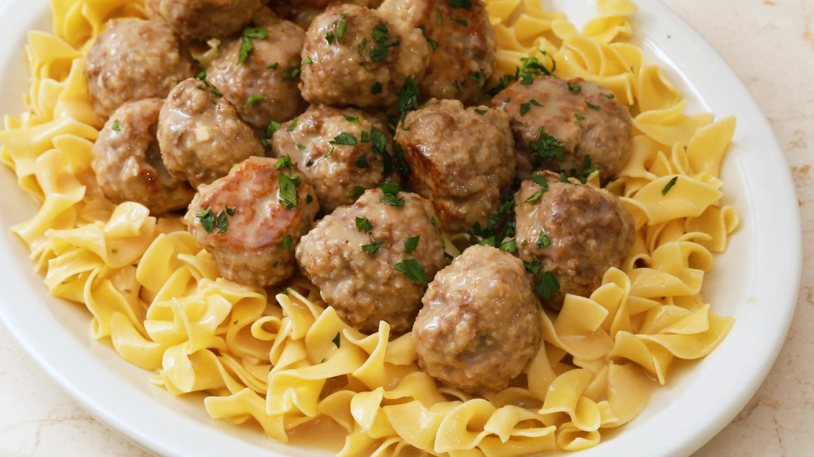

Swedish Meatballs

Description
Swedish meatballs is a great beef dish that can be easily made with meatballs that you can prep far ahead of time and freeze until the day you wish to cook them. The best part of the dish is the strong mustard taste which gives an excellent flavor to both the noodles & the meatballs. Garnish with parsley to add a leafy & earthy flavor to an already amazing dish.
Meatball Ingredients
- 2 LBs ground beef
- 1/2 LB Italian breadcrumbs
- 1/4 cup milk
- 2 tbsp chopped parsley
- 1 tbsp brown mustard
- 1/2 tsp salt
- 1/2 tsp freshly ground black pepper
- 1/4 tsp red pepper flakes
- 2 large eggs
- Olive oil for cooking
Swedish Meatballs Ingredients
- 1/4 cup brown mustard
- 1 tbsp Worcestershire sauce
- 2 1/4 cup beef broth
- pinch ground allspice
- 1 tbsp cornstarch
- 1/4 cup heavy cream
- 12 oz egg noodles
- Chopped, fresh parsley, for garnish
Cooking Meatballs
- Combine all ingredients for the meatballs except for the olive oil in a large bowl
- Mix together with your hands until well combined
- Scoop out 1 tablespoon portions and roll them into balls
- Place meatballs on a parchment paper lined baking sheet and freeze for 5 to 10 minutes to firm up prior to cooking
- Heat olive oil in a large pan over medium-high heat and cooking in batches and turning until browned on all sides
- Typically takes 3-5 minutes per batch depending on your heat and stove
- Drain on a paper towel
Note: use slotted spoon to rotate meatballs around or spatula.
Cooking Swedish Meatballs
- Begin boiling a pot of water
- In a large pan over medium-high add 2 cups of beef broth, Worcestershire, mustard, allspice, and stir
- Make a slurry in a bowl combining 1/4th cup of beef broth and cornstarch, whisking until no lumps remain
- Mix slurry into the bowl and begin adding cream slowly while whisking constantly once mixture begins to boil
- Add the meatballs and cover and cook until the sauce thickens and meatballs are well heated, cook for 8-10 minutes.
- Cook the noodles as the meatballs simmer for about 8 minutes
- Serve dish with buttered noodles and garnish with parsley